Tomás Tapia
Digital Architect Manager | Engineering Manager
Building resilience cloud solutions and leading high-performance engineering teams. 15+ years transforming complex challenges into robust, reliable, and highly available systems that ensure business continuity even when unexpected events occur.
Certifications
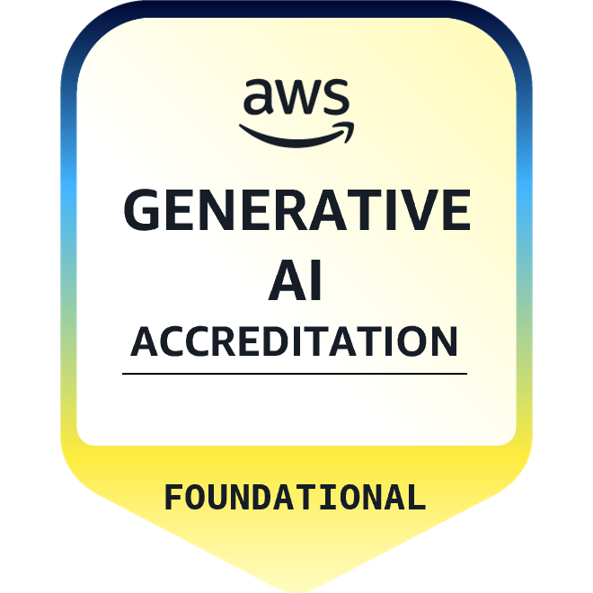
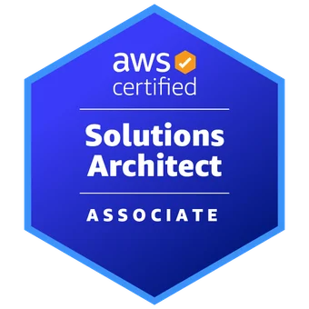
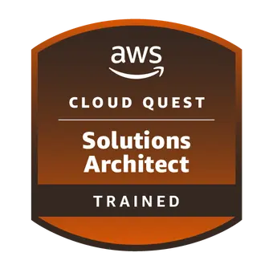
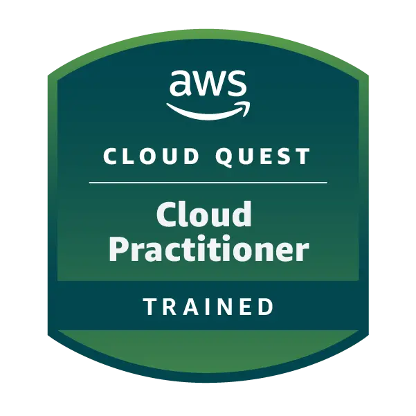
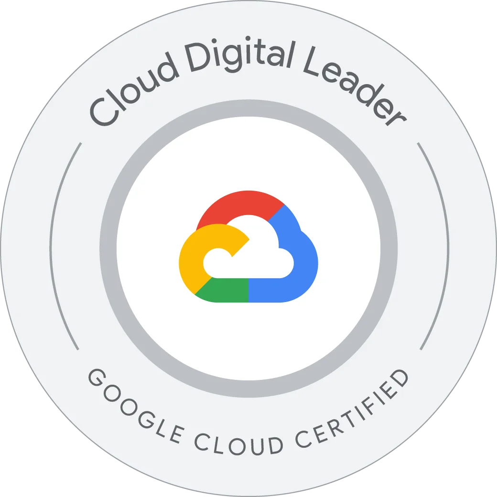
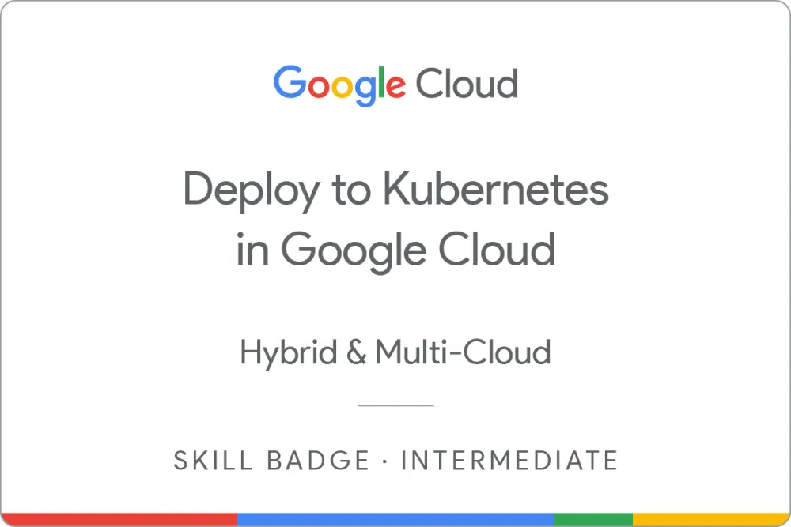
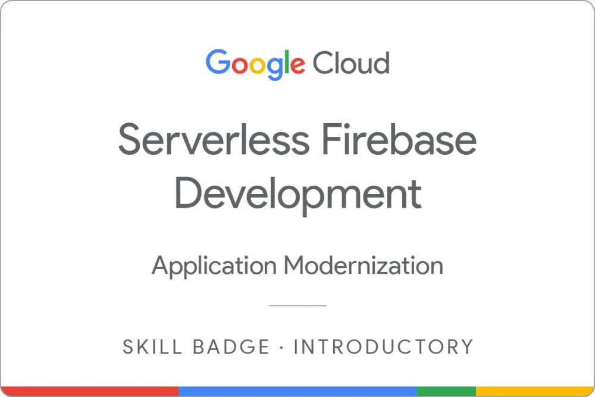
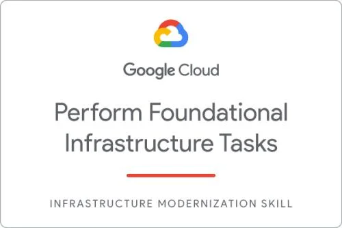
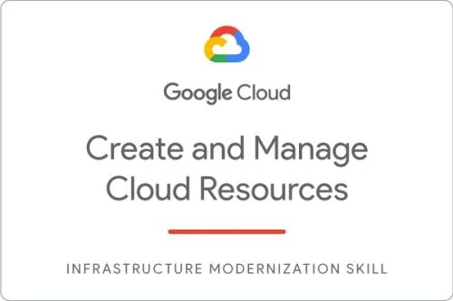
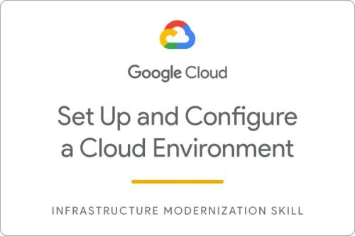
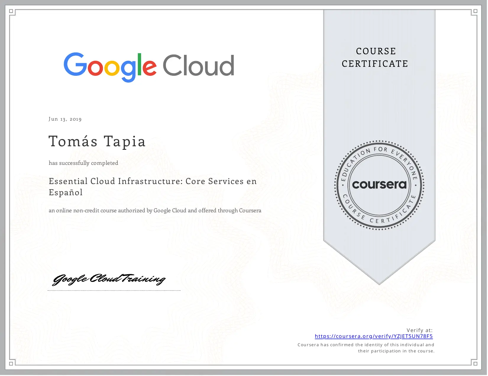
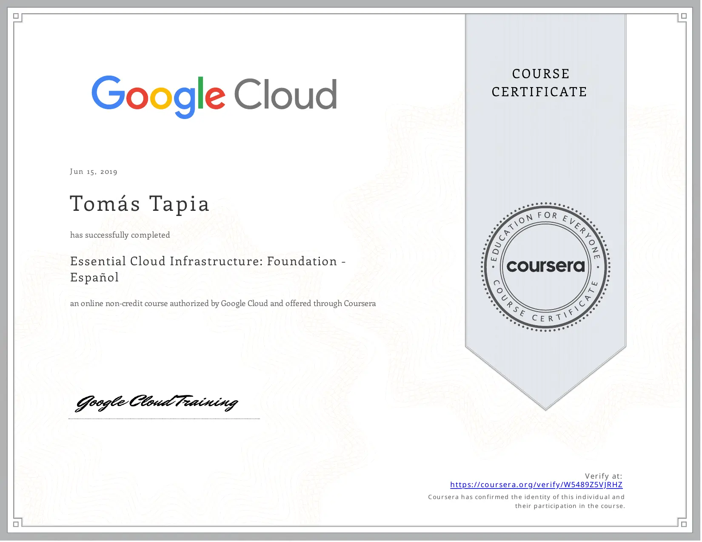
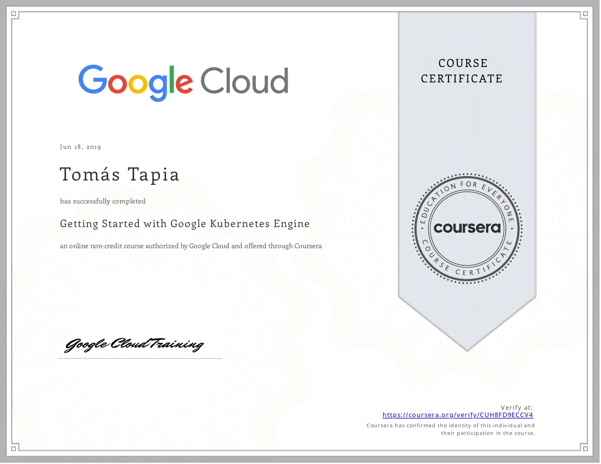
About
Hello! I'm Tomás Tapia, an IT Solution Architect with over fifteen years of experience in technical leadership and software development. My career has been built on a hands-on approach, a strong customer focus, and the ability to guide teams through complex projects.
I work with cloud platforms like AWS, GCP, and Azure, helping companies design and run systems that are scalable, secure, and cost-efficient. I'm especially interested in cloud-native architectures, including serverless and container-based solutions.
On the development side, I have experience with Golang, Java (Spring Boot), Node.js, and TypeScript, as well as building modern interfaces with Vue.js and Angular. My goal is always the same: create reliable, efficient solutions that make a real impact on both users and the business.
I also enjoy mentoring engineers and leading teams, encouraging best practices and helping people grow in their careers. Technology is always moving, and I see myself as a lifelong learner.
If you're working on something exciting and want to talk about cloud, architecture, or innovation, let's connect.
Videos
Talks, tutorials, and insights about cloud architecture and technology leadership.
Cloud Architecture Best Practices
Modern patterns for building scalable and resilient cloud applications.
Serverless Development with AWS
Deep dive into serverless architectures and AWS Lambda best practices.
Technical Leadership Insights
Lessons from leading engineering teams and driving technical excellence.
Featured Projects
AWS Trusted Advisor MCP Server
A Model Context Protocol server providing access to AWS Trusted Advisor through both legacy Support API and modern TrustedAdvisor API endpoints.
Cloud Run Microservice Template
Template for creating microservices on GCP Cloud Run using NestJS with structured logging via Pino.
API Test Project
NestJS application focused on CI/CD integration and Swagger documentation as an example for scalable server-side apps.
Interested in collaborating or discussing any of these projects?